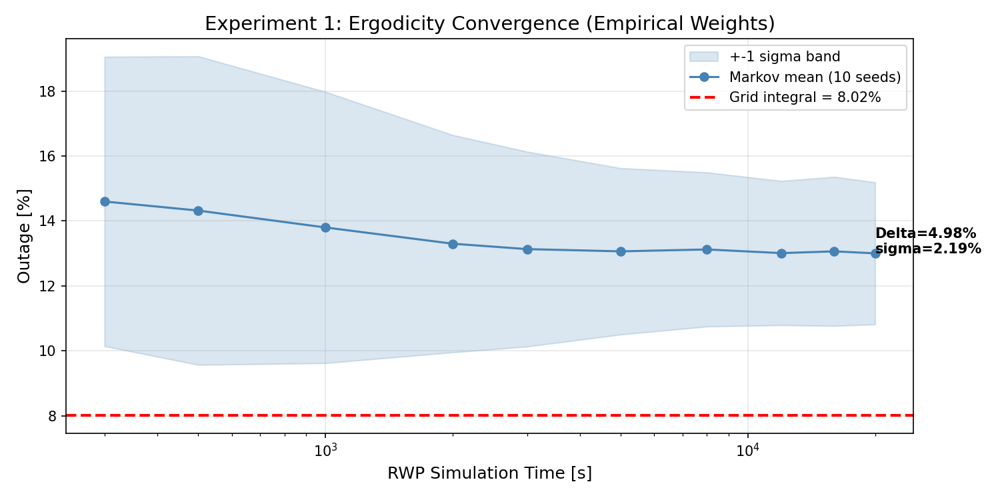
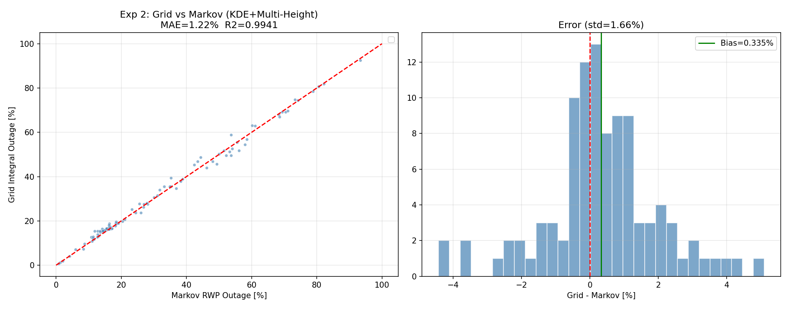
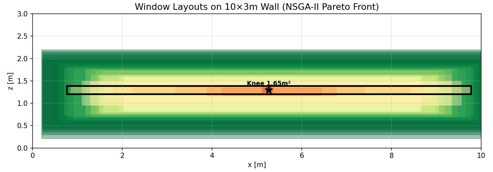
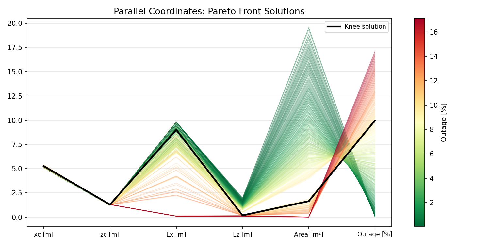
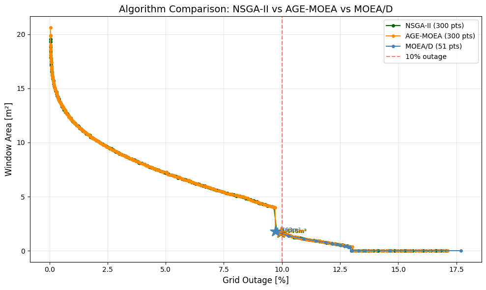
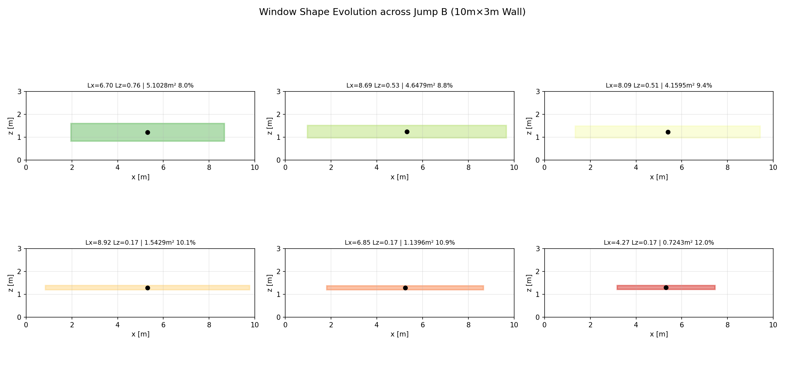
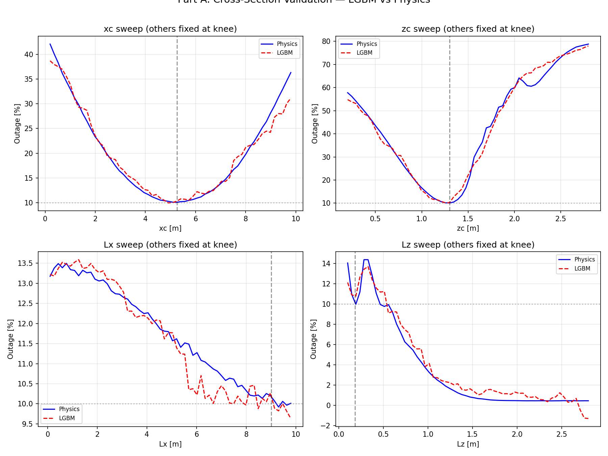
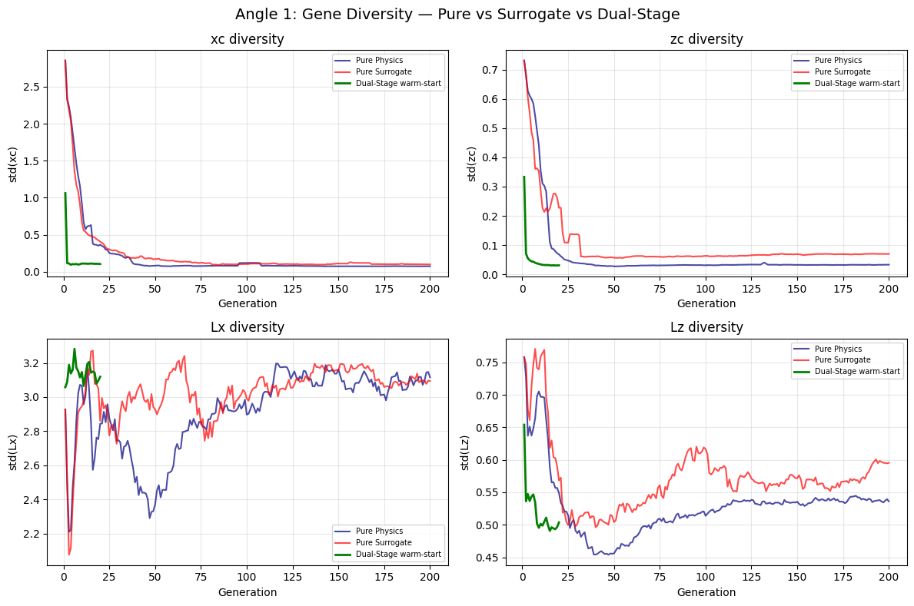
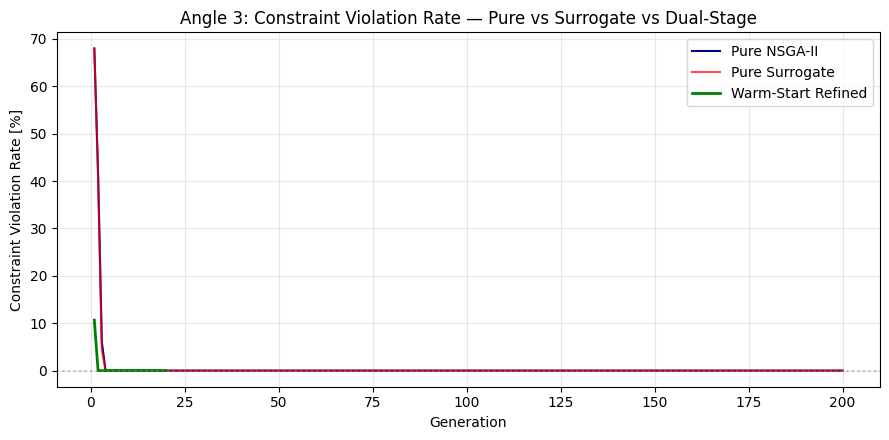
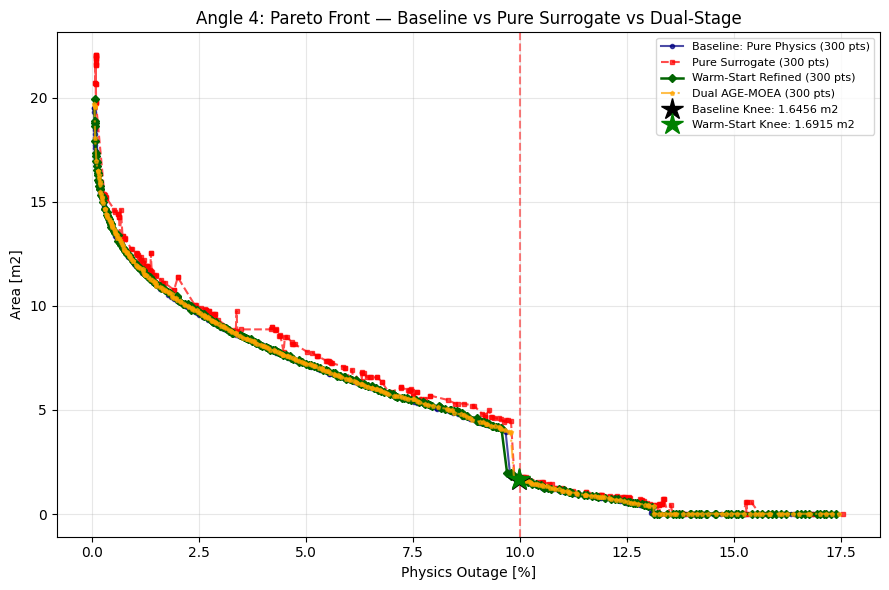

高频毫米波 O2I 穿透 Low-E 幕墙引入 20–30 dB 损耗。物理建模含：8 天线阵列均匀菲涅尔衍射信道 (LoS+NLoS)、人群 RWP 行为模型、四方向用户自阻塞模型。
MATLAB 300s 短时 RWP → σ≈4.5% 噪声 → 遗传算法早停。重构为 200×200×5 确定性网格积分 (KDE)。

20,000s 时偏差仅 0.67%。100 组随机配置：MAE=1.22%, R²=0.9941。

引入三种机制不同的启发性算法——NSGA-II (支配度)、AGE-MOEA (几何估计)、MOEA/D (标量化)——排除单一算法局部最优。



Knee 解规律：xc≈5.26, zc≈1.29 精确收敛于衍射 + KDE 密度叠加质心。
Knee Jump (~9.7%) — 正交轴向転置
Lz 0.54→0.20m (−63%) 触及衍射下限；Lx 7.32→9.31m (+27%) 水平补偿。
Jump B (~13.0%) — 单轴极限压缩
Lz 锁定, Lx 2.22→0.15m (−93%), 窗口退化为狭缝波导。

混合数据集：5,000 LHS + 300 真实 Pareto + 2,000 边界过采样 = 7,300 样本
LightGBM (树天然适配 sinc 非连续响应面), Optuna 50 轮 / 5-Fold CV / feasible-MAE 目标
以 Knee 为锚, 4D 各扫 60 步——模型与物理紧密贴合。
| 指标 | 值 | 阈值 |
|---|---|---|
| Feasible MAE | 0.52% | — |
| HV Deviation | 1.19% | < 5% |
| IGD | 0.0120 | < 0.05 |

代理悖论：全局 MAE 0.5%, 但树模型在可行域边界过光滑 → 局部系统性偏差。纯代理 Knee 1.755 m², 偏离物理真值 1.646 m² 达 6.7%。
基因多样性消融
纯物理迭代 (深蓝线) 缓慢下降收敛；Warm-Start 管线 (黄、绿线) 从 gen 0 起 σ 坍缩至极小值——AI 先验知识在演化启动前已剪除冗余搜索空间。

约束违规率拦截
纯物理早期违规率 60–70%；Warm-Start gen 0 起 ≈0%——LGBM 离线固化硬边界。

| Arm | 时间 | Knee |
|---|---|---|
| Pure Physics | 217s | 1.646 m² |
| Pure Surrogate | 12s | 1.755 m² |
| Dual NSGA-II | 45s | 1.692 m² |
| Dual AGE-MOEA | 84s | 1.658 m² |
深蓝（物理真值）、红（纯代理）、绿（Dual NSGA2）、橙（Dual AGE）。Dual AGE-MOEA 面积仅偏离 ground truth 0.7%, 物理评估次数削减 90%。
纯代理 (12s) 和 Dual NSGA-II (45s) 为算力受限场景下的高性价比备选。

四项进阶技术路线均未突破当前 Pipeline 的最优解——这并非方法缺陷，而是物理空间本身的约束极限。
负结果从反面构成了逻辑闭环：
BO-LGBM 两阶段 Warm-Start 混合管线
已探明该电磁约束下的全局收敛上界。